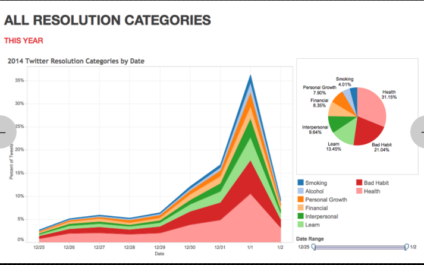
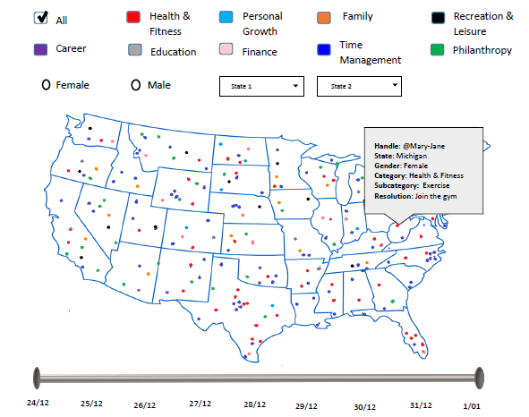
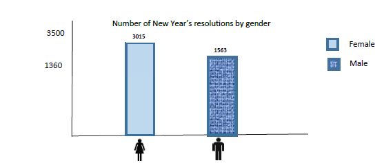

Michael Kyeyune, William Lumala and Thandile Xiphu
New Years Resolutions are made by people every year, while some stick to them and others do not, we thought it would be interesting to visualise the types of resolutions that were made in 2015 heading into 2016.
Before developing our initial design, we searched for existing visualizations that had been done on New Years resolutions. We found quite a few examples, however, we thought that they all could be inproved in some way or another, but there were a few lessons to be taken away from each of them which we then incorporated into our own design.Below are some critiques of the designs we found.
This visualization associated different colours with each category in the pie chart, which maked it easy to get a gist of which categories of resolutions were most popular. We did not like the use of a pie chart and thought that a bar graph would be better suited to represent the data, because once you start looking at the poorer performing categories it is difficult to tell which slice of the pie chart is smaller than the other. Lastly, there was no discrete information, so one does not know how big the data set they was used is or if the data was a true representation of the new year's resolutions of the people in New Jersey. One also can not drill down on the data to see specific numbers about the categories.
The second visualization uses a horizontal bar chart to represent the data. We think vertical bar graphs are more intuitive than horizontal ones. The graph uses percentages which may not be clear from the image but the summation of the values is 99. The graph could have used more colour to distinguish the categories. The value of each category was shown next to its bar which makes it easier to know the actual value and make a comparison.
This is closer to what we have in mind. The map shows the 50 states and the most popular category in each state. We like the use of colour and a symbol to represent a category. The symbols were easy to understand and a key (not shown here) was provided. However, we could not make any other comparisons such as how other categories performed in a state beside the "winner". Another issue we had with this visualization is that the states we not labelled and therefore one had to know names and location of states to understand the visualization.

The main bar graph appears to be a stacked bar graph which does not make it easy to understand what the visualization is showing. Furthermore, we did not like the use of a pie chart. The slider at the bottom allows users to change the time range and see how the data changes with time.
where we got our data
With our visualization, we want to be able to answer the following questions:

The initial design included a map and supporting graphs (below) to show discrete information about the data. We used a map in order to show all the data points in the data set at the same time and how they are spread out. Each point on the map represents a tweet and the location from which it was tweeted. Users can get all the information about a data point by clicking on it (shown on image above). The slider below the map allows users to select the range of time
Above the map, there are checkboxes with each checkbox representing a category or a gender (male and female). This will enable a user select any number of categories and that would change the map to show only selected categories.
Our design caters for comparison between a maximum of 2 states which can be done by selecting the 2 states from the 2 combo boxes above the map. Selecting one state would highlight the state on the map and change the graphs to represent only that state. Selecting another state would then show a comparison between the 2.
After the presentation of our initial design, we received feedback from Michelle and other students. We thought about how each of these points would affect our final visualization and made a few changes.
We thought the colors representing the categories were distinct enough and some of the symbols might be misinterpreted therefore we decided not to add symbols.
Users can compare only 2 states at a time. A state is selected by clicking on its location the map or by choosing it from the combo box. This changes the graphs as well therefore providing discrete information. Comparisons and be made between 2 states for a particular category or a single category.
The final implementation is very similar to our initial design.This was expected as we did not get a lot of negative feedback after
our 1st presentation.
With this visualization, we are able to:
The visualization is interactive and enables users to choose what information they would like to view at a particular time. Furthermore, the visualization covered the 4 main categories discussed by Ben Shneiderman. These are Overview, Zoom & Filter and Details on Demand. The map provided the overview while the interactivity provided the other 3.
The map overview (before any interaction) allows a user to see all the data points at the same time. From this, the user can notice patterns or see which categories are popular in which areas.
Users can zoom into a particular state and will be able to view that information better. The graphs will also show discrete information about that particular state. Using the same functionality, comparisons can be made between 2 states.
Filtering can be done on both the categories and the genders. This allows users to see information about a specific category in a specific state or on the entire map. Filtering also changes the graphs to enable users get more information about the category or gender they have selected.
Clicking on a point on the map shows all the information about that data point on the map. This allows a user to get all the information about that tweet while having an overview in the background.
The group worked together and used the Slack application for communication and file sharing. Google drive was also used to share files as well work collaboratively. All the members agreed on the final design. Some of the work was divided up among the 3 members in the following way:
| Name | Work done |
|---|---|
| Michael Kyeyune | Implementation of the map and coordinates |
| Thandile Xiphu | Implementation of the graphs |
| William Lumala | Editing HTML code and web page layout |